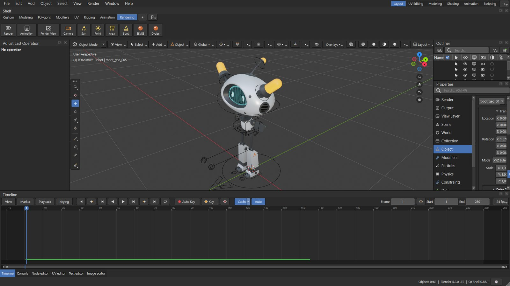
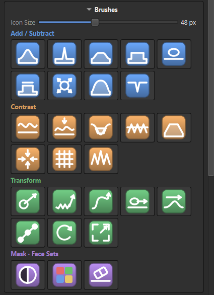
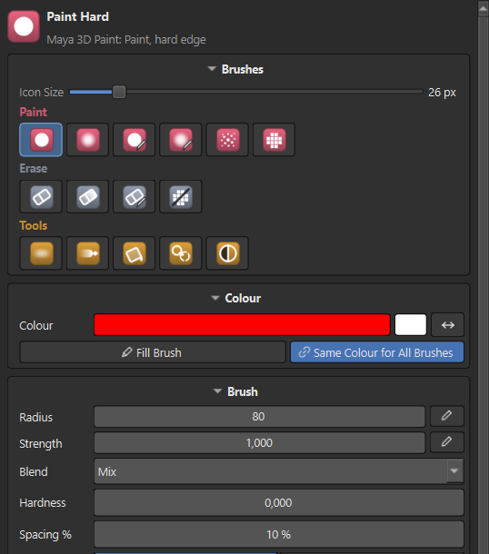
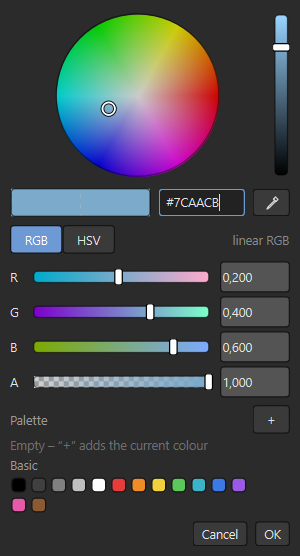
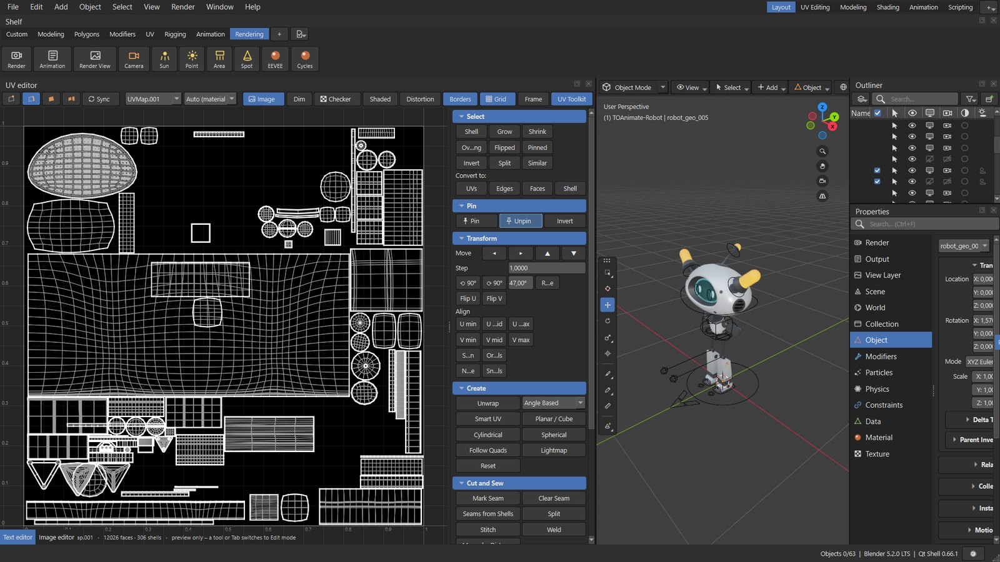
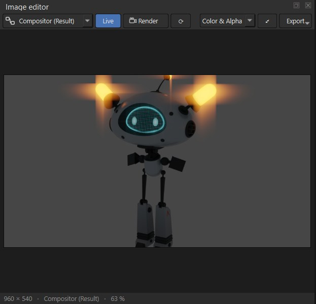

Blender, with a Qt interface
Qt Shell replaces Blender's UI with a PySide6 window – viewport, panels, editors, shelves and Maya-style shortcuts. Your scenes, operators and add-ons stay pure Blender.

What runs in Qt
Blender keeps doing the work – Qt Shell draws the interface around it, with the conveniences of Maya.
Viewport & window
3D viewport
Blender renders off-screen, Qt shows it. Orbit, pan, zoom, numpad views, selection, G / R / S with axes and numeric input, transform gizmos and snapping.
Split viewports
Single, two side by side or stacked, or Four Views like Blender's Quad View – each view with its own camera.
Blender's own menus
File, Edit, Add, Object, Select and the 3D header menus come from Blender's original menus – with icons, and entries added by other add-ons.
Workspaces
Layout, Modeling, Shading, Animation, Scripting, UV Editing, Compositing and Video Editing – dockable panels you can rearrange and float.
Shelf
Maya-style shelves with built-in sets for polygons, modeling, modifiers, UV, rigging, animation and rendering – or your own scripts.
Outliner & Properties
Collections, restriction columns, drag & drop; every property tab, modifiers and constraints as native Qt widgets.
Maya & Blender keys
Switch key sets and mouse navigation; change every shortcut in the Keyboard Shortcuts window.
Interface size
Scale buttons, icons and text separately with a live preview – sharp on high-DPI screens.
Modeling, sculpting & painting
Sculpt ModeNEW
A Sculpt panel with brushes grouped like Maya, and Blender's own viewport embedded for Multires and Dyntopo.
Vertex, Weight & Texture PaintNEW
Paint panels in Maya's 3D Paint style: brushes, colours, falloff, texture slots, rename and save textures.
Colour toolNEW
One colour picker everywhere: disc, RGB / HSV, hex, eyedropper, recent colours and palettes.
Edit Mode
Meshes, curves, armatures and lattices: selection, G / R / S, extrude and Blender's own keymap items.
UV editor
The best of Maya and Blender: several objects at once, UV Toolkit, cut and sew, unfold, texel density, checker map.
Annotate & Measure
Draw notes in the 3D view, measure distances and add objects where you click.
Animation
Timeline & cached playback
Keys, markers, preview range and loop modes; a geometry cache plays heavy rigs in real time while the camera moves freely.
Graph editor
Like Maya's Graph Editor: channels in axis colours, F-curve editing, keys and framing.
Blue Pencil
2D drawings keyed on frames over the camera – thumbnails, arcs, review notes – retimed on the Timeline.
Rigs & Pose mode
Click a rig control to pose it (like Maya), pick bones and controls by their lines, key the selection.
Rendering & compositing
Render View
Render slots, channels, sampling and annotations, F12 / F11 – as a window or docked.
Video SequencerNEW
Cut movies, sounds, images and camera shots (like Maya's Camera Sequencer) – Blender's own preview or Qt Shell's with Blue Pencil on the shot camera, a transparent sheet, Blue Pencil tracks and cached playback, ripple delete, meta strips and playback with sound. Export to MP4, MOV, MKV, WebM, image sequences or sound.
Animation Player
Play rendered frames with a timeline and save them as a video, with or without the drawings burnt in.
Image editor
Live compositor result, Render Result, painted textures with Auto Reload; export images, sequences and MP4.
Node editor
Shader, world, Geometry Nodes and compositor trees with node search and a property panel.
Scripting & help
Text editor & Console
Python editor with tabs, live checks, outline and find / replace; console tracebacks link to the line.
Python tooltips & API
See the Python command behind any button; drive Qt Shell from scripts – see API.md.
Help → Search
Find any menu item, tab, button or operator in the whole window, like Maya's search.
Updates & error reports
Check for new versions from the Help menu; program errors open a window with Report on GitHub.
Sculpt & Paint panels
Blender's sculpt and paint tools laid out like Maya: big brush icons in coloured groups, the settings you use most right below – and one colour tool for every colour field.



- Icon size slider – make the brush buttons as big as you like
- Blender's own viewport embedded for Multires, Dyntopo and native strokes
- Pen pressure, brush circle, F / Shift+F radius and strength drag
- Texture slots – add, rename, save and save as, right in the panel
- Right-click menu with Size, Strength, Unified and Pressure
- Image editor Auto Reload follows the texture while you paint
Screenshots
Taken from Qt Shell running in Blender 5.2 with the TOAnimate Robot rig.

UV Editing
The UV editor works on all selected meshes at once and stays fast on dense UV layouts.
- Maya or Blender style selection and tools
- UV Toolkit: pin, align, rotate, flip, unwrap
- Cut and sew, unfold, layout, texel density
- Checker map drawn on the mesh in the 3D view
Compositing
The Image editor follows the compositor: add or change a node and the result updates live.
- Compositor result, Viewer node, Render Result
- Rendered animation with a cached timeline
- Live compositing of already rendered frames
- Export images, image sequences and MP4

What's new
Qt Shell is updated often. The latest releases – every one with its notes on GitHub.
Inside Blender: Help → Check for Qt Shell Updates… shows the notes of every newer version and installs it.
Install
About a minute. No admin rights needed.
- Download
qt_shell.zipfrom the latest release. - In Blender: Edit → Preferences → Add-ons → ▾ → Install from Disk… and pick
qt_shell.zip. - Enable the Qt Shell add-on and click Install PySide6 in its preferences (Blender pauses while it downloads).
- Start it with Window → Open Qt Shell – or tick Start Qt Shell when Blender starts.
Use the qt_shell.zip from Releases – the “Code → Download ZIP” archive contains the whole repository and Blender cannot install it.
After updating, restart Blender; the status bar shows the running version.
Questions
The short answers.
Does Qt Shell change my .blend files?
No – your scenes stay normal Blender files and open in Blender without Qt Shell. Qt Shell keeps its own settings (layout, shelves, shortcuts) outside the .blend.
Can I go back to Blender's own interface?
Any time: Window → Show Blender Window brings it back, and closing the Qt Shell window offers Return to the Blender UI, Restart Blender or Quit Blender.
Do my other add-ons still work?
Yes. Menus, the 3D view sidebar (N) and property panels are built from Blender's own definitions, so entries and panels added by other add-ons show up too.
Which Blender versions and systems are supported?
Blender 4.2 and newer. Qt Shell is developed and tested on Blender 5.2 LTS on Windows 11; Linux (X11) and macOS are supported too.
Is it free?
Yes – Qt Shell is open source under the GNU GPL 3.0, like Blender.
I found a bug – what now?
Use Help → Report a Qt Shell Bug… or open an issue on GitHub. When Qt Shell hits a program error, its error window fills the report in for you.
Support Qt Shell
Qt Shell is made in spare time. Every star, bug report and sponsor helps it grow.
💛 Become a sponsor
Would you like to support the people who develop Qt Shell? Click Sponsors in Qt Shell's status bar for the contact.